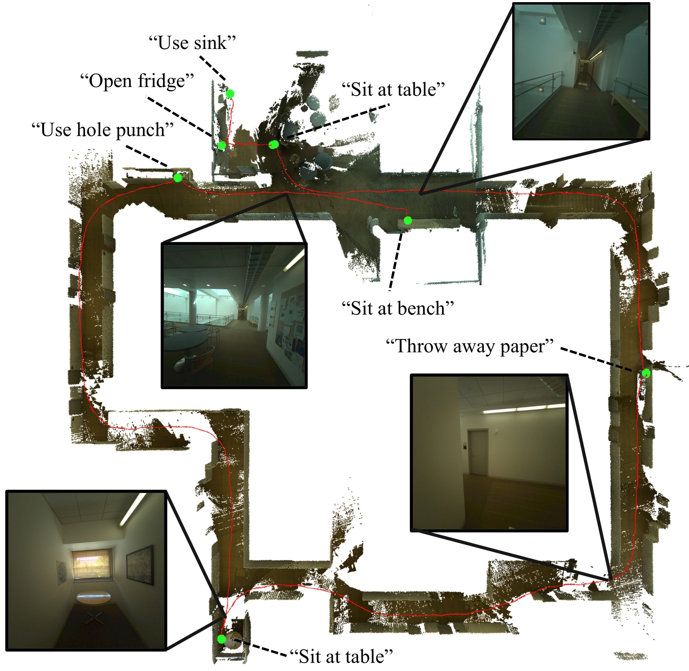
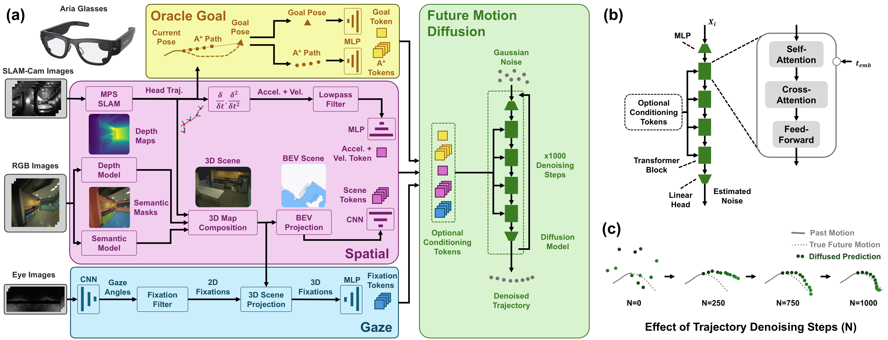
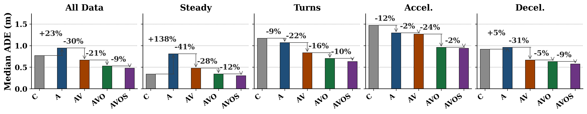
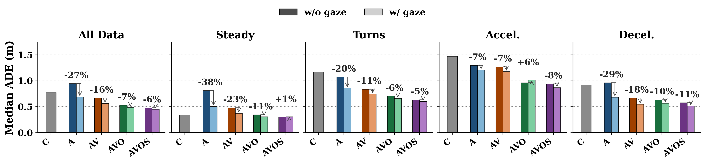
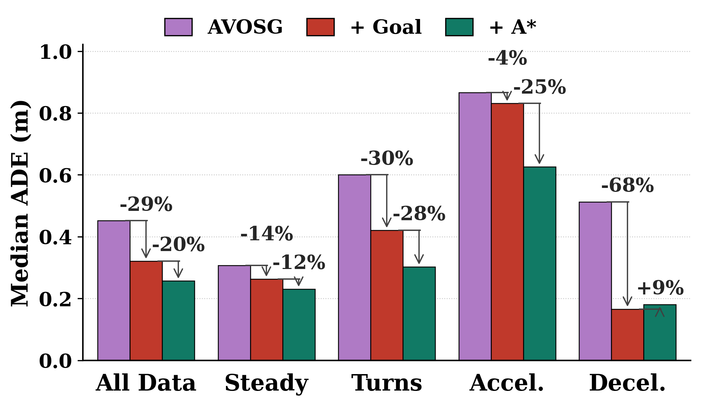

In submission: ICRA, 2027
Comparing Utility of Inertial, Occupancy, Semantic, and Intent Information in Human Motion Prediction During Daily Tasks
Abstract
Accurate human motion prediction is crucial for robotic systems operating around people, particularly in complex indoor spaces. In this study, we assess the relative importance of different sources of information in indoor motion prediction with a human motion diffusion model. We collected a dataset of nine naive human subjects conducting simulated indoor daily activities while wearing a pair of Meta Aria glasses. This dataset includes ten buildings from a university campus, and encompasses 238 minutes of navigation between daily tasks. Overall, we demonstrate a 42% improvement beyond a constant velocity baseline. Including body motion, scene representation, and eye gaze fixation data significantly reduced prediction error. Semantic information was found to be useful for indoor motion prediction, but to a lesser degree than in outdoor navigation. Providing explicit intent information reduced error beyond any other addition, suggesting that incorporating explicit intent estimation or user input are fundamental for finer prediction of indoor motion. One of the few indicators of intent, eye gaze fixation, was found to be especially useful in predicting deceleration, and provided basic spatial information to the model in the absence of an occupancy map. These results are a first step towards predicting human motion in highly ambiguous indoor scenarios.
Overview
Task-Focused Protocol

We asked study participants naive to experimental goals to complete everyday indoor tasks while wearing Meta Aria glasses. Task sets were ordered objectives to complete within a space, and were organized such that a route between two tasks was never repeated. This yielded 540 total walked routes across nine subjects and ten locations, for a total of 238 minutes of indoor walking data. This dataset was randomly divided by trial into training and evaluation sets.
Model Overview

We used a diffusion model to predict future head trajectories over a 5s horizon. To ablate the benefit of increasing system complexity, the model was conditioned on varied combinations of input data. Possible inputs included head acceleration (A), head velocity (V), scene occupancy (O), semantic label masks (S), and gaze fixation (G). Oracle goal information was also included as an ablation, to determine the benefit of missing intent information.
We developed a flexible diffusion model structure composed of four simple transformer blocks, shown above. Input information were mapped to tokens using CNNs (O, S) or MLPs (A, V, G). This approach was found to be a robust way to include a large variety of multi-modal information, but further work could find benefit in customizing token computation.
Results
In alignment with prior work, inertial and occupancy information significantly reduced error in motion prediction. In task-focused motion, we find that gaze is a valuable signal to both indicate intent to decelerate before it occurs, and to provide basic spatial information. Notably, these results are based on natural gaze behavior from subjects who were unaware of experimental goals. Using gaze as an active control signal to disambiguate uncertain situations is a promising direction of future work.
Semantic labels were generally informative, but did not produce the same magnitude of improvement as prior outdoor crowd-focused work. This suggests that for indoor, task-focused navigation, supplying semantic information is less informative than in outdoor crowd scenarios. Future work could incorporate the use of semantic label filtering by isolating task-relevant labels, instead of including all possible task objects.


Even with gaze data, ambiguous situations are common in human motion, and without higher-level knowledge of task goals or individual routines, accurate long-horizon motion prediction is a major challenge. Analysis of models with oracle task and route information demonstrated that intent inference is still a challenge, even with significant other sources of information. Particularly, the challenge of predicting the timing of motion initiation is highly relevant for indoor scenarios and seemingly infeasible with vision data alone.
